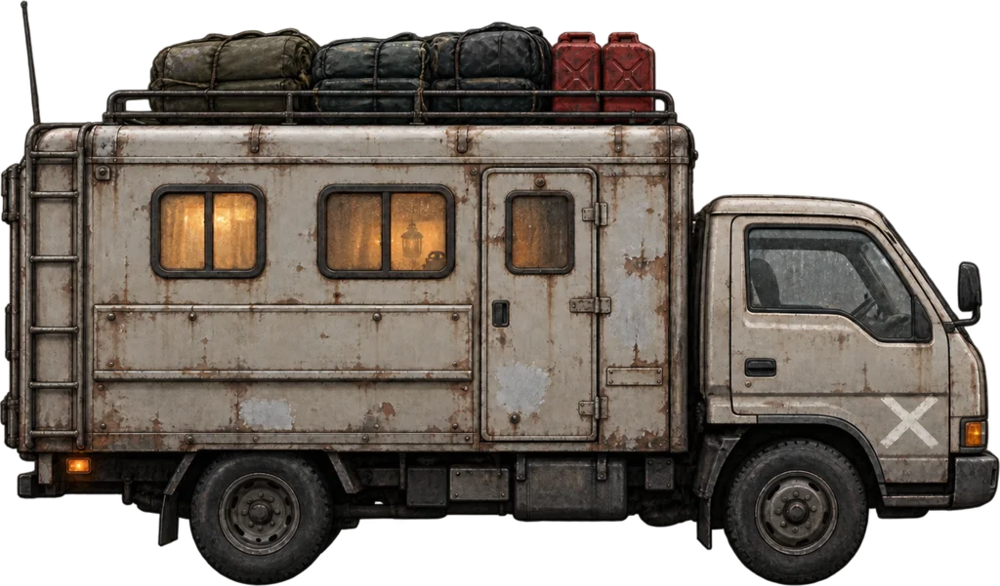

비교 화면 폭 · 기본 360px
기존 큰 원본 재구성 · 게임 미적용
부산 감천 부두 → 김해 들판
같은 풍경 안에서 이동 · 게임상 18km


부산 감천 부두김해 들판풍경·속도 검토용
역방향은 그림을 뒤집지 않고 반대쪽부터 봅니다.
이 길의 흐름
항만의 낮은 시설이 수로와 들판으로 이어진다. 평지가 넓어지되 산을 새로 크게 세우지 않는다.
동작 줄이기 설정이 켜져 있습니다. 구간 선택으로 비교하세요.
두 장소의 지형 기준
부산 감천 부두 — 항만 창고와 낮은 시가지 뒤로 이어지는 산지
김해 들판 — 넓고 낮은 삼각주 들판, 수로와 멀리 물러난 산
실제 지형을 참고한 미술적 압축입니다. 실측 도로·조망 방향·건물 위치를 그대로 재현한 것은 아닙니다. 거리는 기존 게임 값이며 변경하지 않았습니다.
- 낙동강유역환경청 · 지형 및 지질
낙동강 유역의 분지·하천 평야, 김해 삼각주와 하류 협곡 구간.
- 부산시 · 강동 생활권
낙동강변 생활권과 남북 산림축.